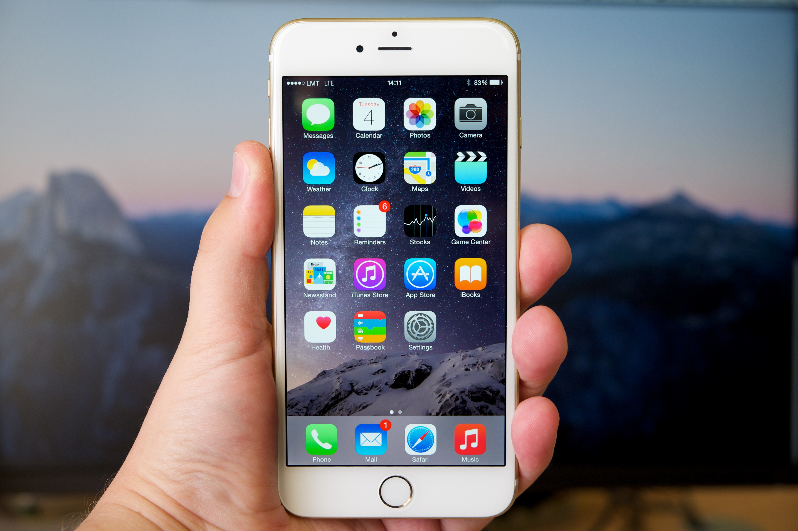

Unveiling the Latest iPhone: What You Need to Know
Apple has once again taken the tech world by storm with the launch of its latest iPhone model. As always, excitement surrounds the release, and for good reason—this iteration brings a host of features and improvements that are set to redefine the smartphone experience. Let’s dive into the highlights of the new iPhone and what it means for users and tech enthusiasts alike.
Design: Elegance Meets Functionality
The new iPhone maintains Apple’s commitment to sleek design while introducing subtle refinements. With a refined finish, it feels more premium than ever. The device is available in a range of eye-catching colors, allowing users to express their personal style.
The front of the phone features a stunning Super Retina XDR display, which boasts improved brightness and color accuracy. Whether you're streaming videos, gaming, or browsing, the visuals are nothing short of breathtaking. The notch has also been reduced, giving you more screen real estate while still housing the front camera and Face ID technology.
Performance: Power Under the Hood
At the core of the latest iPhone is Apple’s newest A-series chip, which promises significant performance boosts. The AXX Bionic chip not only enhances overall speed and efficiency but also improves graphics performance, making it ideal for gaming and creative tasks. This means smoother multitasking, faster app launches, and an overall more responsive experience.
Battery life has also seen improvements, with the new model boasting longer usage times thanks to optimized hardware and software integration. Whether you’re using it for work or play, you can count on your iPhone to keep up with your busy lifestyle.
Camera: Photography Reinvented
Apple has always prided itself on its camera capabilities, and the latest model continues this legacy with an upgraded camera system. The new iPhone features advanced computational photography capabilities, allowing users to take stunning photos in various lighting conditions.
The main camera now includes larger sensors and improved optics, resulting in better low-light performance and enhanced dynamic range. Night mode has been refined, and new features like Cinematic mode and ProRAW photography give users more creative control over their shots. Whether you're a casual photographer or a pro, the new camera system is designed to elevate your photography game.
Sustainability: A Step Towards Eco-Friendliness
Apple has made significant strides in sustainability with the latest iPhone. The new model is constructed from recycled materials, and the packaging has been redesigned to minimize waste. As consumers become more environmentally conscious, Apple’s commitment to reducing its carbon footprint is a noteworthy aspect of this release.
Conclusion: Is It Worth the Upgrade?
For those considering an upgrade, the new iPhone presents a compelling case with its array of features and enhancements. Whether you’re a loyal Apple user or contemplating making the switch, this model undoubtedly offers a blend of style, performance, and functionality that sets it apart from its predecessors.
As always, it’s essential to evaluate your personal needs and preferences before making a decision. But one thing is for sure: the latest iPhone continues to push the boundaries of what a smartphone can be, ensuring that Apple remains at the forefront of mobile technology.
Are you planning to upgrade to the latest iPhone? What features are you most excited about? Share your thoughts in the comments below!